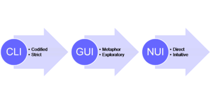
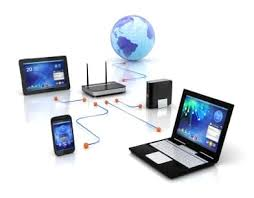
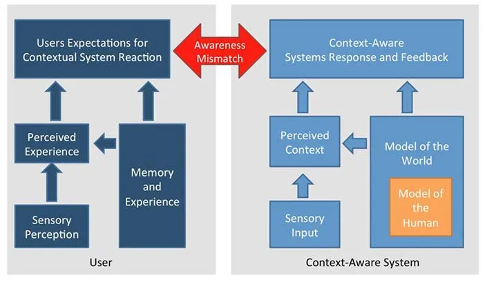

Apa itu Ubiquitous Computing beserta contohnya
Apa itu Ubiquitous Computing ?
Konsep dasar mengenai ubiquitous computing pertama sekali diperkenalkan oleh Gordon Moore pada tahun1965. Moore mengamati bahwa jumlah transistor pada sebuah sirkuit meningkat dua kali lipat setiap tahunnya. Pengamatan ini kemudian melahirkan Moore’s Law Electronics yang menyakan “The future of Integrated Electronics is the future of electronics itself. The advantages of integration will bring about a proliferation of electronics, pushing this science into many areas. Integrated circuits will lead to such wonder as home computer-or at least terminal connected to a central computer-automatic control for automobiles, personal portable communications equipment”. Moore mengemukakan bahwa di masa depan seluruh alat elektronik akan saling terhubung dan dikontrol pada sebuah komputer secara otomatis. Sementara itu istilah ubiquitous computing sendiri pertama sekali diperkenalkan oleh Mark Weiser pada tahun 1988 di XEROX PARC ketika menjabat sebagai direktur Computer Science Laboratory (CSL).
Weiser berpendapat bahwa di masa depan teknologi komputer akan kita temui ditanamkan (embedded) pada setiap perangkat yang kita gunakan sehari-hari, dimana perangkat tersebut akan mendukung aktifitas harian kita, dan relevan dengan aktifitas harian kita masing-masing, mengelola rumah kita. Weiser menyebutkan “The most profound technologies are those that disappear. They weave themselves into the fabric of everyday life until they indistinguishable from it”. Menurut Weiser, ubiquitous computing adalah the next generation computing environment dimana penggunanya secara terus menerus berinteraksi dengan jaringan wireless komputer, computing ada di seluruh aktifitas manusia dan invisible kepada penggunanya. Ada tiga key points menurut Wiser, yaitu: (1) Contrasting virtual reality yakni menanamkan (embedded) komputer ke dalam real world, bukan real world kedalam komputer; (2) Challenging the Personal Computing paradigm yakni terlalu berfokus pada mesin dibandingkan task yang harus diselesaikan; (3) New Era of Computing yakni komputer ada di setiap aktifitas kehidupan kita.
Ubiquitous Computing (sering disingkat menjadi "ubicomp") Ubiquitous bisa di artikan dimana-mana sedangkan Computing adalah komputer. Ubiquitous computing system merupakan perubahan paradigma dari personal computing menjadi physical integration. Pada era personal computing membutuhkan perhatian penuh pengguna dan tidak menggimplentasikan context-awareness dalam pengembangannya, sementara itu pada era ubiquitous computing system sudah melibatkan context-awareness dan melibatkan human-computer pada sistem. Context-awareness yang dimaksud adalah memodelkan aktifitas penggunanya (yang dapat diukur secara tenjibel) dalam berbagai situasi untuk mempelajari kebiasaan pengguna dalam mengoptimalkan sistem. Sehingga kita sulit membedakan aktifitas yang berinteraksi dengan komputer atau manusia.
Dua contoh awal dari pengembangan ubicomp adalah Active Badge dari Laboratorium Riset Olivetti dan Tab dari Pusat Riset Xerox Palo Alto. Active Badge dikembangkan sekitar tahun 1992, berukuran kira-kira sebesar radio panggil (pager), alat ini terpasang di saku pakaian atau sabuk para pegawai dan digunakan untuk memberikan informasi di mana posisi seorang karyawan dalam kantor, sehingga saat seseorang ingin menghubunginya lewat telepon secara otomatis komputer akan mengarahkan panggilan telepon ke ruang di mana orang tersebut berada. Sedangkan Xerox PARC Tab yang juga dikembangkan pada sekitar tahun 1992 adalah sebuah alat genggam (handheld) dengan kemampuan setara dengan sebuah communicator. Patut diingat kedua alat ini diciptakan sekitar 15 tahun lalu dan bahkan sempat diproduksi secara komersial jauh sebelum era telepon seluler 3G yang tengah kita alami saat ini.
Gambar Olivetti Active Tab dan Xerox Parc Tab
Aspek - aspek yang mendukung pengembangan Ubiquitous Computing
- Natural Interfaces 
- Wireless Computing 
- Context Aware computing 
- Micro-nano Technology
Sebelum adanya konsep ubicomp sendiri, selama bertahun-tahun kita telah menjadi saksi dari berbagai riset tentang natural interfaces, yaitu penggunaan aspek-aspek alami sebagai cara untuk memanipulasi data, contohnya teknologi semacam voice recognizer ataupun pen computing. Saat ini implementasi dari berbagai riset tentang input alamiah beserta alat-alatnya tersebut yang menjadi aspek terpenting dari pengembangan ubicomp.
Kesulitan utama dalam pengembangan natural interfaces adalah tingginya tingkat kesalahan (error prone). Dalam natural interfaces, input mempunyai area bentuk yang lebih luas, sebagai contoh pengucapan vokal “O” oleh seseorang bisa sangat berbeda dengan orang lain meski dengan maksud pengucapan yang sama yaitu huruf “O”. Penulisan huruf “A” dengan pen computing bisa menghasilkan ribuan kemungkinan gaya penulisan yang dapat menyebabkan komputer tidak dapat mengenali input tersebut sebagai huruf “A”. Berbagai riset dan teknologi baru dalam Kecerdasan Buatan sangat membantu dalam menemukan terobosan guna menekan tingkat kesalahan (error) di atas. Algoritma Genetik, Jaringan Saraf Tiruan, dan Fuzzy Logic menjadi loncatan teknologi yang membuat natural interfaces semakin “pintar” dalam mengenali bentuk-bentuk input alamiah.
Komputasi nirkabel mengacu pada penggunaan teknologi nirkabel untuk menghubungkan komputer ke jaringan. Komputasi nirkabel sangat menarik karena memungkinkan pekerja terlepas dari kabel jaringan dan mengakses jaringan dan layanan komunikasi dari mana saja dalam jangkauan jaringan nirkabel. Komputasi nirkabel telah menarik minat pasar yang sangat besar, seperti saat ini banyaknya permintaan konsumen untuk jaringan rumah secara nirkabel.
Diketahui lemeshow adalah nama dari seorang ahli statik yang mengembangkan rumus untuk menghitung jumlah sampel minimal dalam penelitian, jika populasi tidak diketahui atau tidak terbatas.
Context aware computing adalah salah satu cabang dari ilmu komputer yang memandang suatu proses komputasi tidak hanya menitikberatkan perhatian pada satu buah obyek yang menjadi fokus utama dari proses tersebut tetapi juga pada aspek di sekitar obyek tersebut. Sebagai contoh apabila komputasi konvensional dirancang untuk mengidentifikasi siapa orang yang sedang berdiri di suatu titik koordinat tertentu maka komputer akan memandang orang tersebut sebagai sebuah obyek tunggal dengan berbagai atributnya, misalnya nomor pegawai, tinggi badan, berat badan, warna mata, dan sebagainya.
Di lain pihak Context Aware Computing tidak hanya mengarahkan fokusnya pada obyek manusia tersebut, tetapi juga pada apa yang sedang ia lakukan, di mana dia berada, jam berapa dia tiba di posisi tersebut, dan apa yang menjadi sebab dia berada di tempat tersebut. Dalam contoh sederhana di atas tampak bahwa dalam menjalankan instruksi tersebut, komputasi konvensional hanya berfokus pada aspek “who”, di sisi lain Context Aware Computing tidak hanya berfokus pada “who” tetapi juga “when”, “what”, “where”, dan “why”.
Context Aware Computing memberikan kontribusi signifikan bagi ubicomp karena dengan semakin tingginya kemampuan suatu device merepresentasikan context tersebut maka semakin banyak input yang dapat diproses berimplikasi pada semakin banyak data dapat diolah menjadi informasi yang dapat diberikan oleh device tersebut.
Perkembangan teknologi mikro dan nano, yang menyebabkan ukuran microchip semakin mengecil, saat ini menjadi sebuah faktor penggerak utama bagi pengembangan ubicomp device. Semakin kecil sebuah device akan menyebabkan semakin kecil pula fokus pemakai pada alat tersebut, sesuai dengan konsep off the desktop dari ubicomp. Teknologi yang memanfaatkan berbagai microchip dalam ukuran luar biasa kecil semacam T-Engine ataupun Radio Frequency Identification (RFID) diaplikasikan dalam kehidupan sehari-hari dalam bentuk smart card atau tag. Contohnya seseorang yang mempunyai karcis bis berlangganan dalam bentuk kartu cukup melewatkan kartunya tersebut di atas sensor saat masuk dan keluar dari bis setelah itu saldonya akan langsung didebet sesuai jarak yang dia tempuh.
Isu-isu Seputar Ubiquitous Computing
- Security
- Privasi
- Wireless Speed
Ubicomp membawa efek meningkatnya resiko terhadap security. Penggunaan gelombang, infra merah, ataupun bentuk media komunikasi tanpa kabel lain antara alat input dengan alat pemroses data membuka peluang bagi pihak lain guna menyadap data. Sebagai implikasinya sang penyadap dapat memanfaatkan data tersebut untuk kepentingan mereka. Saat ini berbagai riset tentang pengiriman data yang aman, termasuk penelitian terhadap protokol-protokol baru, menjadi salah satu fokus utama dari riset tentang ubicomp.
Penggunaan devices pada manusia menyebabkan ruang pada privasi semakin mengecil. Dengan alasan efisiensi waktu pegawai seorang pimpinan dapat meminta semua karyawannya memakai tag yang dapat memonitor keberadaan karyawan tersebut di kantor. Hal ini menyebabkan sang karyawan tidak lagi mendapatkan privasi yang menjadi haknya karena keberadaannya dapat dipantau setiap saat oleh sang pimpinan beserta data yang menyertainya, misalnya sang pimpinan menjadi dapat mengetahui berapa kali sang karyawan pergi ke toilet hari itu.
Di dalam beberapa film fiksi ilmiah kita sering melihat bagaimana pemerintah suatu negara yang paranoid berusaha memberikan tag pada setiap warganya demi mendapatkan data dengan dalih keamanan nasional. Apabila tidak mempertimbangkan hak-hak privasi dan etika, dengan teknologi saat ini pun hal tersebut sudah dapat diaplikasikan.
Dengan berbagai macam ubicomp devices tuntutan akan kecepatan teknologi komunikasi nirkabel menjadi sesuatu yang mutlak. Teknologi saat ini menjamin kecepatan ini untuk satu orang atau beberapa orang dalam sebuah grup. Tetapi ubicomp tidak hanya berbicara tentang satu device untuk satu orang, ubicomp membuat seseorang dapat membawa beberapa devices dan ubicomp juga harus dapat dimanfaatkan di area yang luas semacam stasiun, teknologi yang ada saat ini belum mampu menjamin kecepatan untuk situasi semacam itu karena itu ubicomp dapat menjadi tidak efektif apabila tidak didukung perkembangan teknologi nirkabel yang dapat menyediakan kecepatan yang dibutuhkan.
Buxton (1995) menyatakan bahwa ubiquitous computing mempunyai karakteristik utama yaitu:
- Ubiquity
- Transparency
Interaksi tidak dilakukan oleh suatu saluran melalui satu workstation. Akses ke komputer dapat dilakukan di mana saja. Sebagai contoh, di suatu kantor ada puluhan komputer, layar display, dan sebagainya dengan ukuran bervariasi mulai dari tombol seukuran jam tangan, Pads sebesar notebook, sampai papan informasi sebesar papan tulis yang semuanya terhubung ke satu jaringan. Jaringan nirkabel akan tersedia secara luas untuk mendukung akses bergerak dan akses jarak jauh.
Teknologi ini tidak menganggu keberadaan pemakai, tidak terlihat dan terintegrasi dalam suatu ekologi yang mencakup perkantoran, perumahan, supermarket, dan sebagainya.
Karakteristik Lingkungan
Ada banyak jenis layanan yang dapat ditawarkan dalam lingkungan AmI, antara lain layanan-layanan airport, perkantoran, perbankan, transportasi, supermarket, pendidikan, rumah tangga, dan lain-lain yang tercakup dalam suatu area perkotaan. Karakteristik dari lingkungan pelayanan ini adalah sebagai berikut:
- Personal Device
- Network Architecture
- Service Provisioning
- Sensing Architecture
- Modes of Interaction
Pemakai dilengkapi dengan peralatan pribadi yang mudah dibawa (portable) seperti: PDA, smart phone, komputer kecil yang mudah dibawa, atau sejumlah peralatan nirkabel yang saling terhubung membentuk suatu Body Area Network. Peralatan peralatan tersebut secara dinamis dapat menyesuaikan jenis protokol radio yang berbeda.
Para pemakai bergerak dalam suatu jaringan komunikasi nirkabel heterogen yang membentuk suatu jaringan berkabel yang lebih luas. Peralatan pemakai saling terhubung menggunakan jaringan nirkabel berbasis infrastruktur. Peralatan-peralatan tersebut juga dapat berhubungan dengan peralatan, sensor, dan layanan yang ada di lingkungan.
Layanan bagi pemakai disediakan di berbagai tempat berbeda dalam lingkungan AmI di mana pemakai dapat menggunakan layanan yang tersedia dengan sumber-sumber daya yang terhubung tanpa kabel. Layanan-layanan ini diberikan oleh suatu sistem layanan gabungan dengan application server yang dapat diakses melalui infrastruktur jaringan.
Untuk mendukung pemberian layanan-layanan tersebut, lingkungan AmI dilengkapi berbagai jenis sensor. Sensor ini membuat interaksi antara pemakai dengan jenis layanan yang dibutuhkan menjadi lebih efisien. Sensor ini akan menangkap informasi dari lingkungan secara terus-menerus dan memantau aktivitas yang dilakukan para pemakai. Sensor ini kemudian membawa informasi tersebut ke sebuah modul AmI yang akan memprosesnya dalam suatu aplikasi. Jenis sensor yang digunakan meliputi jenis sensor tradisional seperti: sensor suhu, tekanan, cahaya, kelembaban udara, dan sensor-sensor yang lebih kompleks, seperti kamera yang dihubungkan dengan jaringan kabel. Dengan demikian, infrastruktur AmI harus dapat menangkap informasi-informasi dari peralatan-peralatan sensor tersebut.
Pemakai berinteraksi dengan layanan melalui suatu multimodal user interface yang menggunakan peralatan pribadi untuk berkomunikasi. Multimodal communication memungkinkan pemakai mangakses layanan tidak hanya pada saat mereka duduk di depan PC, tetapi juga pada saat mereka bergerak bebas dalam lingkungan AmI.
Ubiquitous computing mempunyai beberapa spesifikasi teknis sebagai berikut:
- Terminal & user interface
- Peralatan yang murah
- Bandwidth tinggi
- Sistem file tersembunyi
- Instalasi otomatis
- Personalisasi informasi
- Privasi
Peralatan yang digunakan sebaiknya mempunyai kualitas tampilan yang bagus dan responsif terhadap input dari pemakai. Walaupun dengan ukuran display yang terbatas, penggunaanya harus intuitif dengan tampilan yang bersih menggunakan alat input yang berbeda seperti: pen, handwriting recognition dan speech recognition.
Jika kita membangun sebuah sistem dengan banyak komputer untuk satu pemakai, biaya satu komputer hendaklah tidak terlalu mahal. Meskipun komputer biasa pada umumnya relatif lebih mahal, kamputer ini tidak dapat digunakan untuk ubiquitous computing.Tidak semua komputer dalam ubiquitous computing memerlukan prosesor dan harddisk dengan spesifikasi seperti dalam komputer biasa.
Kebutuhan lain dari ubiquitous computing adalah mempunyai bandwidth jaringan yang cukup untuk melakukan komunikasi antara peralatan-peralatan yang digunakan. Selain masalah bandwidth, ada beberapa faktor lain yang perlu dipertimbangkan berkaitan dengan transformasi data melalui jaringan, antara lain: lokasi terminal untuk mobile communication, penggunaan frekuensi yang tepat, menjaga kualitas layanan, enkripsi data, dan mengurangi gangguan-gangguan terhadap jaringan.
Ketika seorang pemakai menggunakan komputer, dia harus belajar beberapa aspek dasar tentang sistem operasi dan konsep-konsep file serta struktur direktori. Hal ini mengakibatkan pemakai akan lebih terfokus pada bagaimana informasi akan disimpan, bukan pada informasi itu sendiri. Salah satu kebutuhan ubiquitous computing adalah bahwa komputer harus tersembunyi. Komputer harus dapat “memahami” kondisi pemakai. Sebagai contoh, melalui penggunaan voice recognition atau interface lainnya yang memungkinkan pemakai melakukan akses tanpa harus mengetahui nama file tertentu, lokasi atau format file tersebut.
Ubiquitous computing harus dapat mengeliminasi kebutuhan instalasi program. Dalam sistem konvensional, seringkali diperlukan instalasi program yang dapat menimbulkan masalah, dan dalam beberapa kasus harus melibatkan pemakai. Konsep ini tidak berlaku dalam ubiquitous computing. Program harus dapat berpindah dari sebuah computer ke komputer lain tanpa harus mengubah konfigurasi dasar dalam menjalankan suatu program baru. Salah satu alternatif adalah dengan menggunakan bahasa pemrograman Java yang dapat dipindahkan ke computer lain dengan mudah (platform-independent).
Akan lebih baik jika ubiquitous computing system dapat menjaga agar informasi yang tersedia dapat digunakan sesuai kebutuhan pemakai. Untuk memenuhi kebutuhan tersebut, salah satu pendekatan yang dapat dilakukan adalah setiap kali ada seseorang yang baru bergabung dalam sebuah komunitas, profil pribadi orang tersebut harus ditambahkan ke setiap peralatan yang ada.
Salah satu masalah yang paling penting dalam ubiquitous computing adalah resiko privasi yang serius. Sistem ini dapat menyimpan data-data pemakai dan lokasinya yang mungkin dapat diakses oleh pemakai lain. Teknologi jaringan yang baru seperti infra merah atau komunikasi radio nir kabel menggunakan enkripsi untuk menjaga keamanan data.
Contoh Ubiquitous Computing
- Smartphones
- Internet of Things (IoT)
- Wearable Devices
- Smart Home
- Sistem Transportasi Cerdas
Ponsel pintar adalah salah satu contoh paling umum dari ubiquitous computing. Mereka tidak hanya digunakan untuk komunikasi, tetapi juga berfungsi sebagai pusat kontrol untuk berbagai aplikasi dan layanan, seperti navigasi, pembayaran digital, pemantauan kesehatan, dan lainnya.
IoT adalah jaringan perangkat yang terhubung secara nirkabel, seperti sensor, kamera, dan perangkat rumah pintar, yang dapat berkomunikasi dan bertindak secara otomatis. Contohnya termasuk lampu pintar yang dapat diatur melalui smartphone, termostat yang menyesuaikan suhu rumah secara otomatis, dan sensor kelembaban yang memicu penyiraman tanaman.
Perangkat yang bisa dikenakan seperti smartwatch, fitness tracker, dan kacamata pintar, menyediakan akses ke informasi dan layanan yang terhubung secara terus-menerus, memungkinkan pengguna untuk memantau kesehatan mereka, menerima pemberitahuan, dan berinteraksi dengan lingkungan mereka dengan lebih baik.
Sistem rumah pintar mengintegrasikan teknologi ke dalam berbagai aspek rumah tangga, seperti pencahayaan, keamanan, energi, dan hiburan. Contohnya termasuk lampu yang dapat diatur secara otomatis berdasarkan jadwal atau sensor gerakan, kunci pintar yang dapat dikontrol dari jarak jauh, dan speaker cerdas yang merespons perintah suara.
Transportasi cerdas mencakup penggunaan sensor, data analitik, dan teknologi komunikasi untuk meningkatkan efisiensi dan keselamatan transportasi. Contohnya termasuk sistem pemantauan lalu lintas yang mengatur lalu lintas berdasarkan kondisi aktual, aplikasi transportasi umum yang memberikan informasi waktu tunggu, dan mobil otonom yang menggunakan sensor untuk menghindari tabrakan.
References:
https://belajarjaringanringan.blogspot.com/2013/12/ubiquitous-computing.html
https://socs.binus.ac.id/2018/12/20/apa-itu-ubiquitous-computing/

Dinda Putri Ramadani
Hai!!! Perkenalkan saya Dinda Putri Ramadani salah satu mahasiswi dari Universitas Dinamika Bangsa Jambi. Blog ini untuk memenuhi tugas yang diberikan oleh dosen pembimbing saya. Terima Kasih!!! xixixi